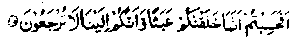

Chapter Seven
60. Bahlool’s conversation with an ascetic boy, a descendant of Imaam Husain
Bahlool Rahmatullah alaihe says: I was,once,walking along a road in Basrah when I came upon some boys playing with almonds and walnuts, while one of them stood beside them, weeping and crying. I thought that the boy was crying because he had not got any almonds or walnuts to play with, so I said to him, "Sonny, cry no more; I shall buy you some almonds and walnuts to play with". The boy looked at me and said, "You fool, do you think we have been created for playing?" I asked, "What else have we been created for"? He replied, "For gaining knowledge and for worshipping Allah Ta’ala". When I said, "May Allah bless your life! How did you come to know of this." He replied, "Allah Ta’ala says:

Deemed you then that we had created you for naught, and that you would not be returned unto Us?
I said, "My dear boy, you talk very wisely; give me a few words of counsel;" whereupon he recited four couplets, which meant: I see men coming to this world and going away; The world and its riches are always on the move, with the wings poised for flying away. The world does not remain with any living man, nor any man lives forever to enjoy its pleasures; death and its affliction are like two horses always running fast towards men, to trample them and to devour them. O fool, beguiled by the charms of the world!. Just think and take something (virtues) from this world to serve you in the Akhirah.
After this, he looked up towards the heavens, raised his hands in supplication to Allah, and chanted the following two couplets, with tears trickling down his cheeks:
O Thou, unto Whom all men cry in humility, O Thou, in Whom everybody puts his trust, O Thou, Who fulfillest the hopes of everyone who entertains good expectations of Thee, and grantest all his desires. '
After reciting these verses, he fainted and fell on the ground. I laid his head in my lap and wiped the dust from his face, with my sleeve. When he came to his senses, I said to him, "Son, why do you feel so afraid? You are but a child and no, evil deed has yet been recorded against you in your book of deeds.' He said, "So, you say; but I always see my mother making afire and she always puts small splinters into the hearth first and puts big logs afterwards. I fear lest, when the Fire of Jahannam is kindled, I should be hurled into it, even before the grown-up people!" I said, "My dear boy, you seem to be very wise, give me a few more words of counsel" At this, he recited fourteen couplets, which meant: I am lost in heedlessness, and death is being driven towards me, ever drawing closer. If I do not die today, I must pass away tomorrow. I pampered my body with soft, sumptuous clothes, little thinking that it must rot (in the grave) and decay. Methinks I see my body crumbling into dust, in the pit of the grave, under mounds of earth. My beauty will soon fade away, my body reduced to a skeleton, denuded of skin and flesh. I see the hours of my life slipping away, and yet my desires are all unfulfilled. A long journey lies before me, and I have no provisions for the way. Ah! I defied my Lord, openly transgressing His commands, while He watched over me all the time. Alas! I indulged in shameful deeds! Ah! Whatever is done cannot be undone, and time once passed cannot be recalled. Ah! I sinned in secret, never let people know of my heinous sins. But, tomorrow, my secret sins will be revealed, and presented to my Lord, Ah! I sinned against Him, though fearing inwardly. Trusting His Infinite Clemency, I sinned most shamelessly, most audaciously, depending upon His Infinite Forgiveness. Who else, but He will forgive my sins. Truly, He is worthy of all Praise!
Had there been no punishment after death, No Promise of Jannah, no threat of Jahannam, In death and decay, there is sufficient admonition, To keep us away from idle pursuits.
But our reason being confounded, We do not take warning from anything; And now there is no hope for us, except that The All-Forgiving should forgive our sins. For, when a slave does anything wrong, It is his Master, none else, Who forgives him. No doubt I am the worst of all His men, I, who betrayed my covenant with my Lord, made in Eternity, And, it is the incapable slave whose promises carry no weight. My Lord, what shall be my fate, when the Fire burns my body? The Fire that melts the hardest rocks!
Ah! I shall be alone when I pass into the grave, Lonely and forsaken at the time of death;
I shall be alone when I rise from the grave; (With none to assist me on that Day).
O Thou, Who Art Unique, with no partners to Thy Majesty, Have mercy on my loneliness, on my being forsaken by all.’
Deeply moved by the couplets, I swooned and,on recovering after a while, found that the boy had gone. Tasked the other boys about him and they said, "Don’t you know him? He is a descendant of Imaam Husain Radhiallaho anho". I said, "I too wondered and I believed he was descended from a noble family. It is no wonder that a descendant of such illustrious ancestors should talk so wisely." May Allah benefit us from the benedictions of this family! ‘Aamin!’ " (Raudh)